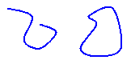
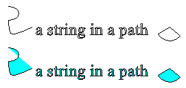

The following illustration shows two curves: one open and one closed.

Closed curves have an interior and therefore can be filled with a brush. The Graphics class in Windows GDI+ provides the following methods for filling closed figures and curves: FillRectangle, FillEllipse, FillPie, FillPolygon, FillClosedCurve, Graphics::FillPath, and Graphics::FillRegion. Whenever you call one of these methods, you must pass the address of one of the specific brush types (SolidBrush, HatchBrush, TextureBrush, LinearGradientBrush, or PathGradientBrush) as an argument.
The FillPie method is a companion to the DrawArc method. Just as the DrawArc method draws a portion of the outline of an ellipse, the FillPie method fills a portion of the interior of an ellipse. The following example draws an arc and fills the corresponding portion of the interior of the ellipse.
myGraphics.FillPie(&mySolidBrush, 0, 0, 140, 70, 0, 120);
myGraphics.DrawArc(&myPen, 0, 0, 140, 70, 0, 120);
The following illustration shows the arc and the filled pie.
The FillClosedCurve method is a companion to the DrawClosedCurve method. Both methods automatically close the curve by connecting the ending point to the starting point. The following example draws a curve that passes through (0, 0), (60, 20), and (40, 50). Then, the curve is automatically closed by connecting (40, 50) to the starting point (0, 0), and the interior is filled with a solid color.
Point myPointArray[] =
{Point(10, 10), Point(60, 20),Point(40, 50)};
myGraphics.DrawClosedCurve(&myPen, myPointArray, 3);
myGraphics.FillClosedCurve(&mySolidBrush, myPointArray, 3, FillModeAlternate)
A path can consist of several figures (subpaths). The Graphics::FillPath method fills the interior of each figure. If a figure is not closed, the Graphics::FillPath method fills the area that would be enclosed if the figure were closed. The following example draws and fills a path that consists of an arc, a cardinal spline, a string, and a pie.
myGraphics.FillPath(&mySolidBrush, &myGraphicsPath);
myGraphics.DrawPath(&myPen, &myGraphicsPath);
The following illustration shows the path before and after it is filled with a solid brush. Note that the text in the string is outlined, but not filled, by the Graphics::DrawPath method. It is the Graphics::FillPath method that paints the interiors of the characters in the string.

Â
Â